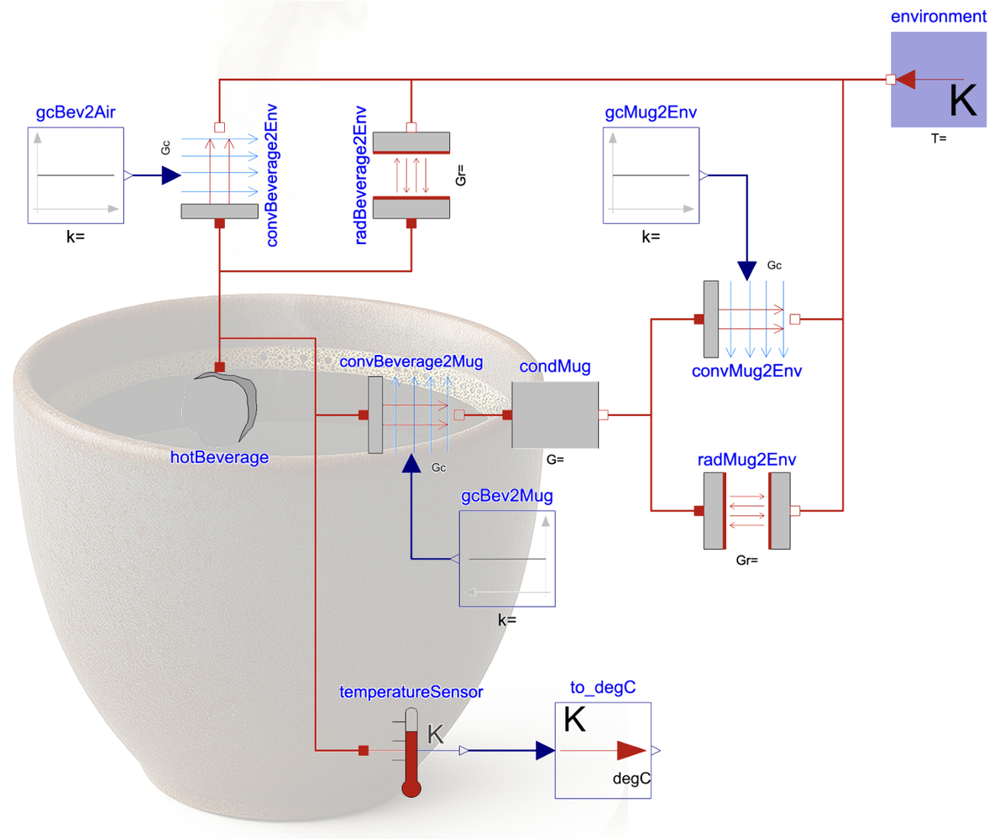
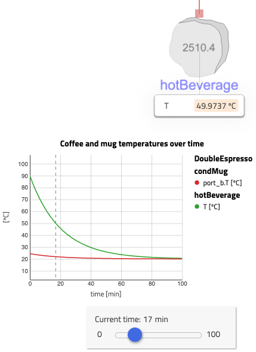
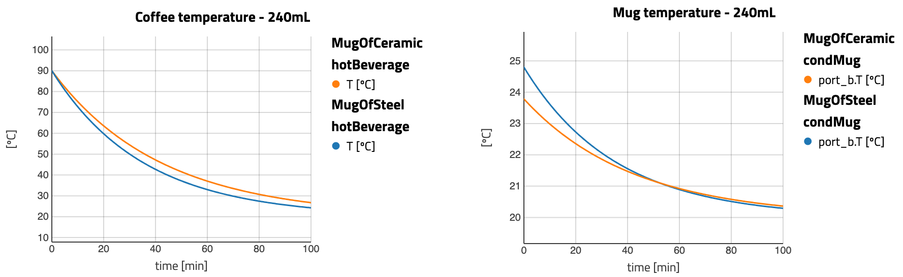

You won’t forget your first time… simulating

(2/4) This is the second of a series of four connected articles. (Read the first article here.)
I hope you’ve got your preferred drink in hand ☕️🫖💧
Last time we built our first model. Today is about simulating it and getting insights on our problem to solve: how much time does it take for our hot beverage to cool down. Keep in mind that we defined the problem to solve first and built our model accordingly.
Are we really done with the modeling task?
From the last article, we could think that the modeling work was almost over. Only the parametrization was missing. However, we cannot really be sure about that until we simulate and observe the expected behavior.
Why? There can always be some unexpected behavior or missing effects in our model. This is true whatever simulation framework you are using, not only Modelica. Sometimes, the available models do not have the equations you expect inside (maybe another correlation, maybe more effects than expected). Sometimes, your modeling assumptions were not correct enough (a typical example could be the meshing of your Computational Fluid Dynamics model that is not refined enough in some edges). For now however, this is a comment to have in mind and we will almost take it as granted that this model is well done and represents what we expect. In a future article, we will look deeper into the models.
Why I diverged a bit to cover this important topic is because we need to have a first good idea of what to expect as simulation results - BEFORE the simulation - in order to be able to criticize our simulation results afterwards. One of the biggest dangers when doing modeling and simulation is to “fall in love with your model” (sentence coined by François E. Cellier), which basically means that you trust blindly the results and do not think about whether your model is valid for the scenario you are simulating.
What do we expect here?
Well, I don’t think it is a big spoiler to tell you that your hot beverage will eventually cool down, by evacuating heat towards its environment, until it reaches an equilibrium (or until you drink it!).
So you should expect the temperature of the beverage to decrease. The temperature of the environment should remain constant (we modeled it as a fixed temperature source!).
What about the temperature of the mug? That’s a nice one! It allows us to discuss about “initial conditions”. We can set the initial temperature of the mug at the desire temperature and accordingly, we would see the heat transfers in the relevant direction. Let’s diverge a bit on that: - Forget about a hot beverage. You could imagine your mug going out of the dishwasher and being very warm (let’s say 50°C), and you pour water out of the tap (at 15°C). The heat from the mug would actually flow into the water and warm it up a bit, as well as going to the environment. - Back to our hot beverage, we could have a mug at the room temperature (around 20°C) and the hot beverage being warmer, the heat would still flow from the beverage to the mug and from the mug to the environment. The temperature of the mug would however most likely warm at first (until enough heat is dissipated). You obviously noticed that when at some point the mug might have been too hot, or at least warm enough, to leave your hands on it.
In her comment, Hagar Elarga suggested that we could add a heat capacitor (energy storage) for the mug. This is a nice way to easily control the initial temperature of the mug, as the heat capacitor expects you to specify an initial temperature (or uses its default value).
So getting back to the “Are we really done with the modeling task?”, well, you see already that based on whether we want to control the initial temperature of the mug or not, we might or might not want to add a heat capacitor. Let’s stick to without for now and go simulate!
Finally some nice curves!
I drink a double espresso most mornings. Dr. Alexander Horn knows that well. “Same procedure as every” day. So I set up the cup size and beverage volume to a double espresso. Let’s look at how much time it takes for it to cool down:

If the temperature when exiting the coffee machine is 90°C, then in less than 7 minutes its temperature drops down to 70°C, which is a typical drinking temperature. After an additional 10 minutes the double espresso is lukewarm (~50°C).
Interestingly, the heat transfer repartition shows that more than two thirds of the heat is evacuated via the mug and only less than a third via the espresso surface in contact with the air.

Are these reasonable values? Yes, they are… under the assumptions of the model: in a ceramic cup, not touched, with only the heat exchanged model.
What if the cup is made of steel? I have seen these cups in campers, and I always thought they could become hot and the espresso would could down faster. Would they?

They do… but not that much. And why? Because the amount of hot beverage is so low that there is not that much of an effect (though still visible). So what if we had a larger drink? The heat capacity would be higher and we could expect it to take longer to cool down. Let’s see!

Now we see that the coffee gets lukewarm after 30 to 35 minutes, depending on the mug material. It definitely cools down slower (about twice the time), despite the larger surface of exchange.
And what if I put my hands around the cup? Well, you have to wait for this one! Because our model might need a refactoring to make this convenient to change.
The END for today
Enough for today. Next time, we will modify this model into reusable subsystems (read components) so that, for example, the mug is one component that we can reuse in another model later.
Break is over, go back to what you were doing.
Clément
Next ->
Bonus: resources for fast learners
- You might have seen in this post that there is an espresso machine model in the ThermofluidStream library. (See
ThermofluidStream.Examples.EspressoMachine.) Have a look at it, simulate it and see whether the coffee temperature is right 😉
© 2025 Clément Coïc — Licensed under creative commons 4.0. Non-commercial use only.